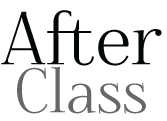

After Class: Bringing Social to Massive Open Online Courses |

https://github.com/reedlabotz/AfterClass
Massive Open Online Courses (MOOCs) have gained huge popularity over the last year with enrollments in a single class reaching as high as 160,000. Several different services have arisen that facilitate these online courses, however all fail to fully address one large aspect of an education–the need for social interactions amongst the students. Interactions amongst students help lead to a sense of community, a necessity for learning. After Class is a service that assists students in finding peers enrolled in a MOOC that share common goals and backgrounds to socialize with via online anonymous chat, with encouragement to move on to video or other multi-media chat when all parties are comfortable.